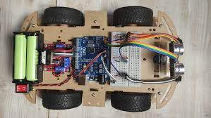
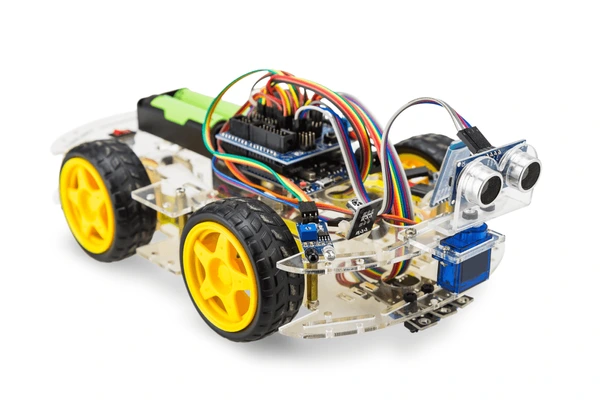
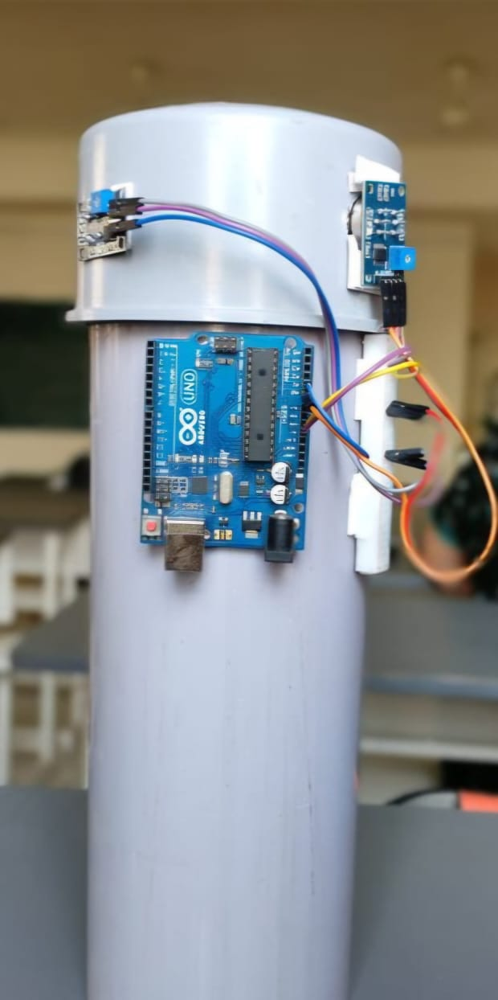
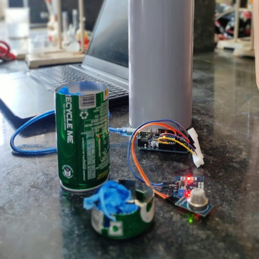

Till now I have worked on three circuit related project.
First one is a prototype of Line following and obstacle avoiding car.
Second is an Industrial Object Counter.
Third is a prototype for Comparison and Measurement of Gases released on burning Biodegradable and Non-Biodegradable plastic.
Here are some images of that protoytpe.
Line following and obstacle avoiding car :-

Industrial Object Counter :-

Prototype for Comparison and Measurement of Gases released on burning Biodegradable and Non-Biodegradable plastic :-
